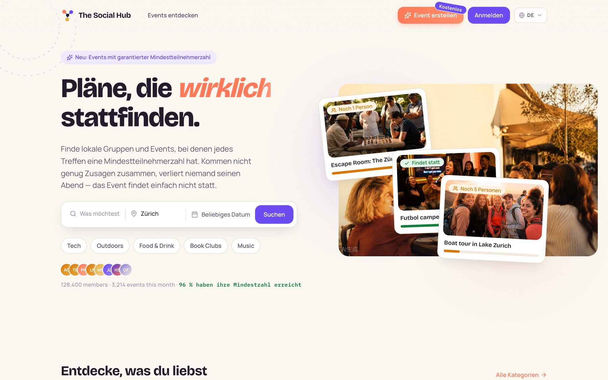
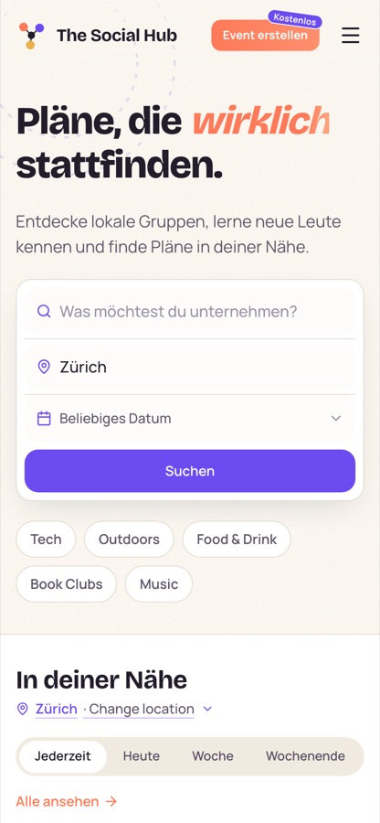
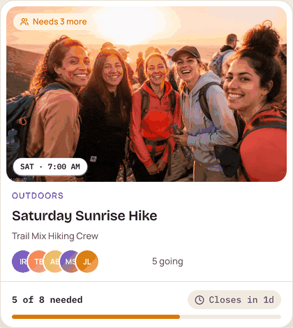
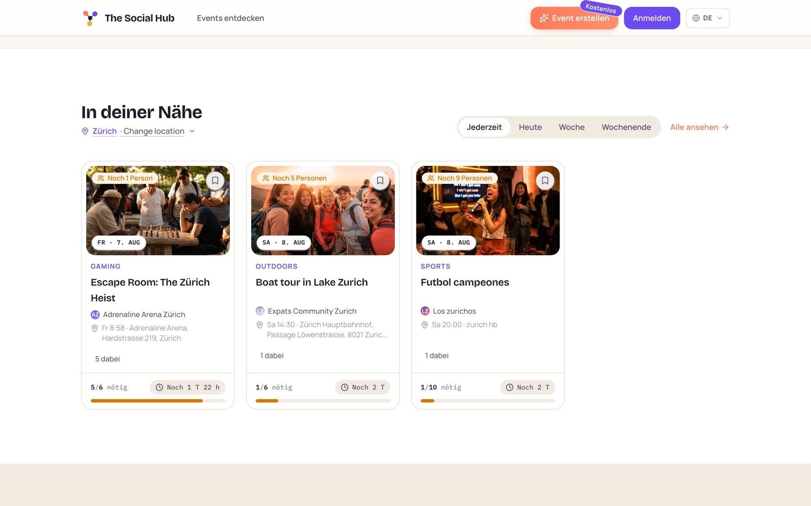
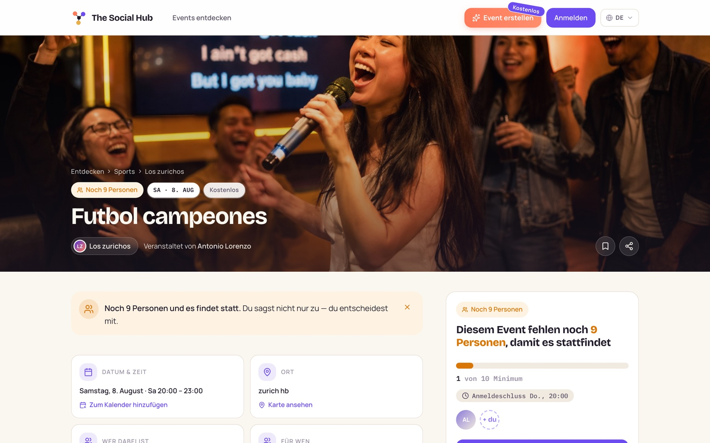
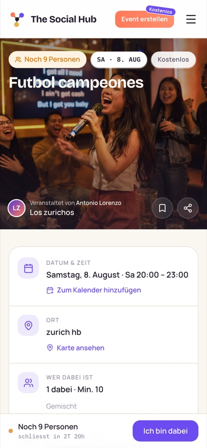

Self-initiated product · design, code and operations
The Social Hub
Plans that actually happen
Some things you simply cannot do on your own. The Social Hub helps people find the others who make their hobby possible — and it has one stubborn rule: every event has a minimum crowd. If not enough people say yes before the deadline, the event cancels itself, and nobody spends their Saturday standing in a park waiting for a team that was never going to show up.
- For
- Anyone who has moved city, changed jobs, or run out of friends who are free on a Saturday.
- Role
- Everything — product, design system, frontend, backend, database, payments, deployment.
- Why
- A private project to force myself through an unfamiliar stack end to end, with a real product as the exam.
- Status
- Live at joinsocialhub.app · bilingual · demo seed data before launch.


Because you cannot play a football match with two people
Some hobbies have a floor. A football match needs about ten people. A board-game night needs four. A language exchange needs at least one person who speaks the other language. Below that number the activity does not get worse — it stops existing. And the people who feel that most are exactly the ones with the least room to fix it: you moved to a new city, or changed jobs, or your old crowd all have kids now, and the three friends you have left are busy on Saturday.
What you need in that moment is not a bigger social network. It is seven more people who also want to play at three o'clock on Saturday, in the same part of town, this week. That is a very specific kind of matchmaking, and almost nobody builds for it — because it is much easier to build a platform where attendance is a number that goes up than one where attendance is a condition that has to be met.
6 of 10 · needs 4 more · closes Wednesday
10 of 10 · the match is on
Joining stops being a gamble
Turning up alone to a thing that might not happen is a lot to ask of a stranger. Here you can see whether it is going to happen before you commit — and if it does not, it is cancelled properly instead of quietly shrinking to four awkward people in a park.

Hosting stops being lonely
The host says up front: this only works with ten. From then on everyone who has already said yes has a reason to invite one more person — the countdown is on their evening too. Recruiting stops being one person's unpaid job.
The maybe disappears
Five people say maybe, two turn up, the host stops hosting. That is how hobby groups die. A deadline replaces the maybe with an answer, and a clean cancellation costs a group far less than a disappointing evening.
The whole product is that one sentence, taken seriously: a gathering has a minimum crowd, and everybody can see how close it is. Everything else in this case study — the interface, the database, the payments — exists to make that sentence true for a stranger on a phone.
Why I gave myself this problem
Twenty years of product work teaches you how to brief engineers extremely well. It does not teach you what it feels like when your own deploy silently drops half its traffic at three in the afternoon. I wanted that feeling. So instead of another prototype that dies in Figma, I picked a product idea with real moving parts — accounts, money, scheduling, two languages, search engines — and gave myself one condition: it has to be publicly reachable on its own domain, not a demo I show on my laptop.
The condition I set
Reachable, not demonstrable
Anyone can make a screen look finished. A product only starts teaching you things when a stranger can reach it on a URL you do not control the network conditions of — so that was the bar, and everything below counts as the tuition I paid for it.
Why this idea and not a to-do app
Real moving parts
Accounts, scheduling, money, two languages and search engines are the parts of a product that get built badly when nobody has felt the consequences. A minimum-crowd platform needs all five, which is precisely why I chose it over something comfortable.
One rule, visible everywhere
The threshold is not a setting buried in a form. It is the interface. A card does not say "3 attending", it says how many people are still missing and how long they have. An event page leads with the same sentence. The progress bar is the product promise rendered in eight pixels of colour, and every state in the system — needs people, almost there, happening, cancelled — is a state a visitor can read at a glance.

Browsing: every card counts down to its minimum

Deciding: the event page says exactly what is missing
How it is built
Client and server are one TypeScript project running as one process. The browser calls server procedures directly, so a renamed database field turns into a red squiggle in a React component instead of a runtime surprise in production. There is no separate API contract to keep in sync, because there is no separate API contract.
- One token-driven component system
- Separate desktop and mobile shells
- German and English from the same screens
- Sessions, email and Google sign-in
- Payments, built and dormant
- Housekeeping on an hourly job
- Drizzle ORM, nine tables
- Generated, reviewable migrations
- Push to main deploys the lot
The part I did not expect to matter: I gave a personal project a proper design system, out of habit. It paid for itself the first time the entire mobile experience had to be rebuilt — the rebuild was a layout problem, not a repainting job.
Money I deliberately never hold
Paid events meant deciding where ticket money sits between purchase and event. The comfortable answer is "our account". The correct answer, in Switzerland, is nowhere near it: holding other people's money can count as taking deposits or as financial intermediation, and that is a regulated activity with a regulator attached. So the money never lands anywhere I control.
Charged on the platform account through a hosted card field, so raw card numbers never touch my own pages.
The funds sit in the payment provider's balance — never on a Social Hub bank account. The regulated party stays the provider.
The event missed its minimum, was cancelled, or a participant filed a report.
Only after the event ended, a holding period passed, and nothing was disputed.
Three invariants hold the whole thing together: only a signed webhook can turn a booking into a paid ticket, the demo checkout disables itself the moment real keys exist, and every operation is idempotent, because webhooks arrive more than once and a payment system that double-counts is worse than one that does not run at all.
Built, then switched off. The entire payment layer — onboarding, payment intents, signed webhooks, refunds, payout batches, dispute reporting — ships in the codebase and stays dormant without a secret key. Until the company registration number comes through, the platform runs a clearly labelled demo checkout instead.
Mobile is not a narrower desktop
The brief I gave myself was "have a quick look at the mobile view". The audit was less quick than hoped: the navigation collided with itself on every page, one event card was around 450 pixels tall so exactly one event fitted on a screen, the explore filters scrolled sideways into invisibility, and a single page carried 33 tap targets under the 44-pixel minimum. It was a desktop site holding its breath.
Rebuilt mobile home: search pulled up, hero condensed

Event detail: facts consolidated, RSVP bar pinned in reach
What I took away. Not the frameworks — those change every eighteen months anyway. What stuck is how differently you review a design when you are also the person who has to migrate the database at eleven at night: fewer states invented for their own sake, more decisions made once and shared, and a much shorter path between "that looks wrong" and "that is fixed".